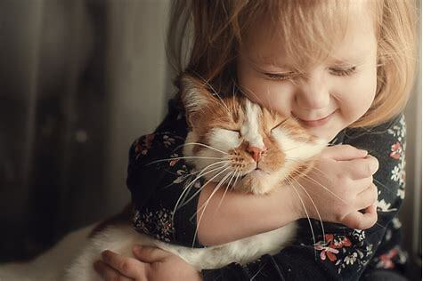
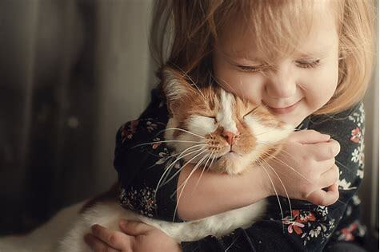

Los animales mayores a 7 meses serán dados en adopción ya castrados. El adoptante de un cachorro de menor
edad asumirá la responsabilidad y el compromiso de castrarlo entre los 7 meses y el año de edad. La
castración es un requisito prioritario para concretar la adopción como parte de la tenencia responsable de
un animal de compañia.
Los datos suministrados por el solicitante son confidenciales y de acceso restringido, para el uso exclusivo
de los procesos de adopción de la Fundación Patitas y no serán transferidos a terceros bajo ninguna
circunstancia.
Se debe corroborar previamente que en el lugar donde habitara el nuevo integrante de la familia se aceptan
mascotas
No se dá en adopción bajo ningún punto de vista mascotas para regalar a un tercero, el adoptante debera
convivir con la misma
En el caso de mascotas bebes (de 2 a 4 meses)
El adoptante o alguien que conviva con él no puede dejarlo sólo mas de 4 horas ; ya que esto los puede
deprimir y eso le baja las defensas
No es recomendable que en su nuevo hogar habiten niños menores de 3 años, ya que los bebes son mucho mas
vulnerables que los gatitos cachorros o adultos
Para adopción de gatos
Se debe contar con protecciones en balcón , ventanas al exterior,patio, fondo o terraza propia techado,con
paredes altas o con pinches en su parte superior

 
